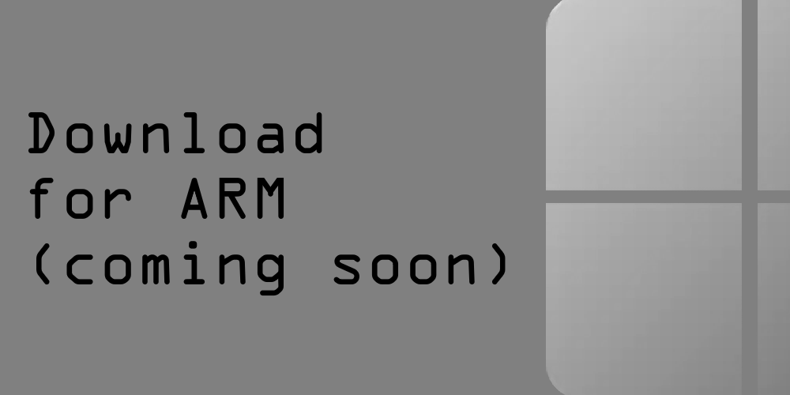
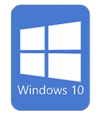
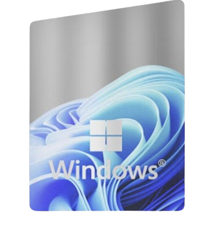

Layl is an All in One Command-Line To Do All Your Tasks!
The Future of the Command-Line is here
Enjoy an All in One Package that can do almost everything your default shell can do!
- Can Do File Manipulation
- Can Do Directory Maniuplation
- Can Create Processes
- Can Kill Processes
- Can Do Power Management
- Can do registry editing
- Can be customized through init files
Download Links (current build: 0.350)

Supported Versions: Windows 10 1907+, Windows 11 21H2+

